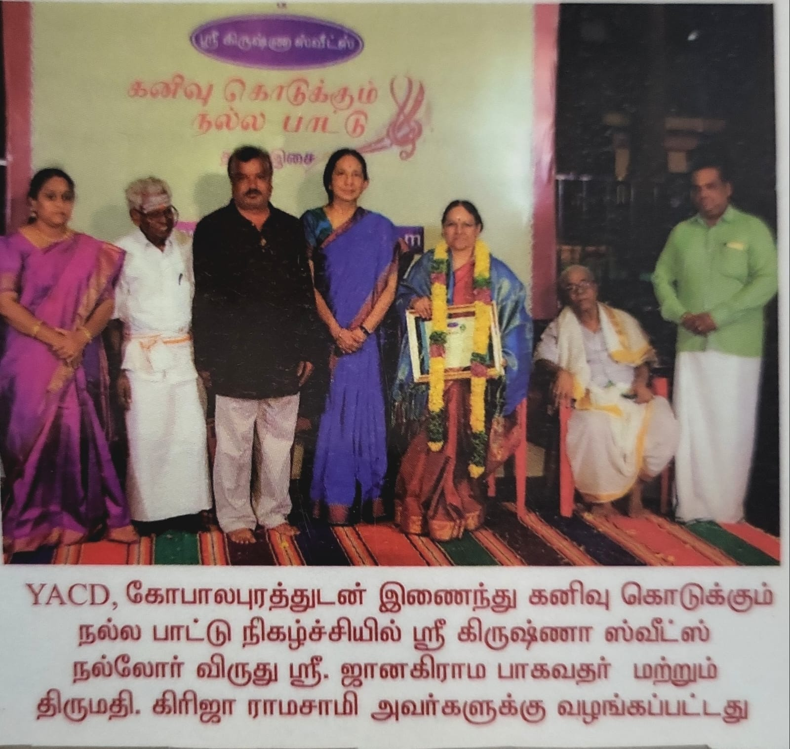
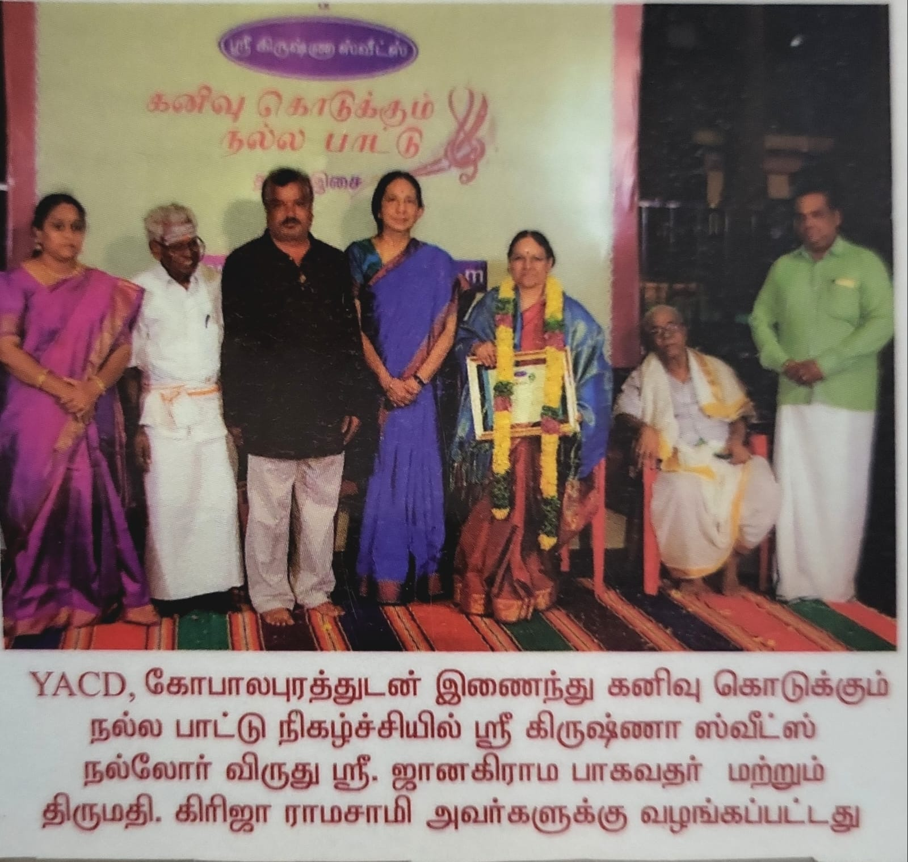
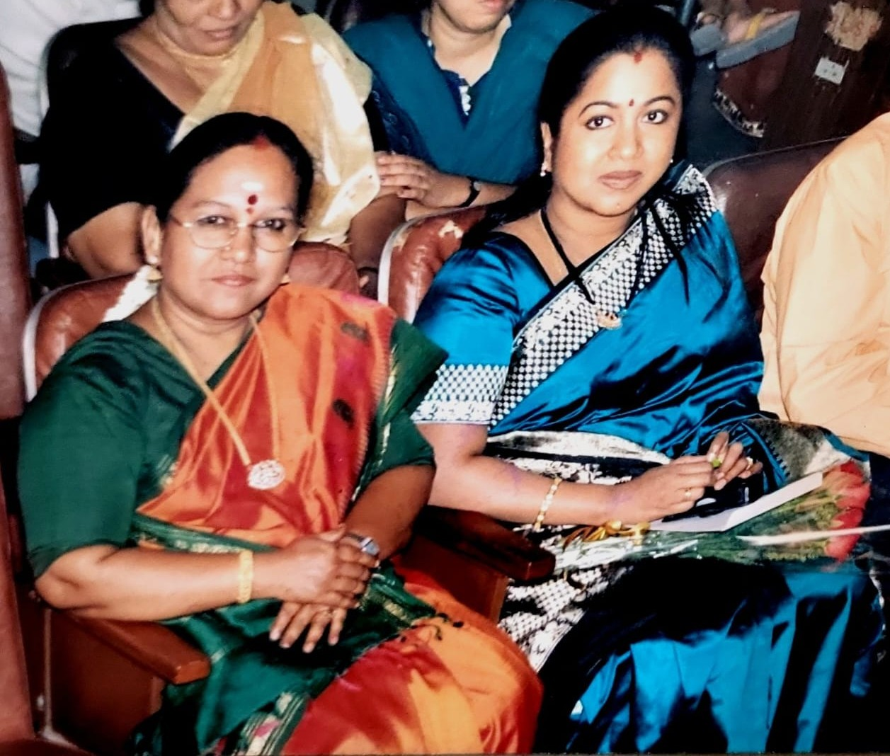
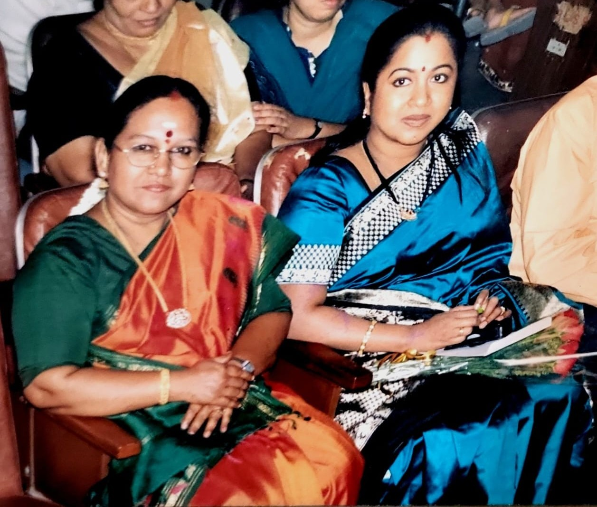

Girija Ramaswamy — Harikatha Performer & Carnatic Vocalist
Welcome to the official website of Girija Ramaswamy — Indian Harikatha performer, music composer, teacher and vocalist for Bharatanatyam programmes. Explore her performances, videos, gallery, and achievements.
Photo: Sangeetha Vachaspathi Award by SASTRA-Chennai.
Achievements
Starting with the highlight of having given many performances all over India and abroad. She has performed Classical Carnatic, Thevaram, Thiruppugazh, Harikatha concerts, music composition and vocal support for Bharatanatyam in many temples all over India and several prestigious sabhas like Sri Krishna Gana Sabha (Chennai), The Music Academy (Chennai), Mylapore Fine Arts (Chennai), Ayodhya Mandapam (Chennai), Nungambakkam Cultural Academy (Chennai), Bharath Kalachar (Chennai), TTD (Tirumala Tirupathi Devasthanam, Chennai), Jamshedpur Rama Bhaktha Samajam, Kolkata Vidwath Samajam, Tanjore Vidwath Samaj, and in countries such as Singapore, Japan, Germany, Canada, Malaysia, West Indies and Nairobi. Listing some of her notable achievements:
- Started performing Harikatha from the age of 7. Pudukottai Sri Santhanandha Swamigal conferred the title “KALARATHNAM”.
- “A” grade artist in Harikatha in All India Radio & Doordarshan.
- Has sung compositions by Padma Vibhushan Dr. M. Balamuralikrishna, Padma Shri Dr. Kunnakudi Vaidyanathan, etc.
- Acted and sang in the Tamil film “Arangetram” directed by Shri K. Balachander.
- Won many prizes at Tamizh Isai Sangam competitions (1969–1974); awards presented by CM C. N. Annadurai and CM Kamarajar.
- Received the title “Naavanmai Mikka Nalla Isai Selvi” by Kalaimamani Isaiperarignyar Saidai Thevaram T. Natarajan (1970).
- “Sabhanayakan” by Balaji Fine Arts (1976) for Harikatha.
- Composed music for dance dramas on Kamarajar, Bhooloka Vaikuntam, Lord Muruga and Ahalya.
- First place (music) in All India NCC; honoured by the President of India Shri Neelam Sanjeeva Reddy and appreciated by PM Smt Indira Gandhi.
- “Nrithya Sangeetha Varshini” by Sarasalaya (1999).
- “Kalaimamani” — Tamil Nadu State Award (2000).
- Teacher (Music & Sanskrit) at PSBB T. Nagar; later Lecturer and Principal, Tamil Nadu Government Music College, Chennai.
- Chief Guest/Judge at numerous institutions and sabhas across India; External Examiner at QMC, TN Govt Music College, Kalakshetra, etc.
- “Harikatha Shikhamani” by HH Pujya Sri Kanchi Jayendra Saraswathi Swamigal (2007).
- “Madhura Gaana Manonmani” (2009); “Madura Murali Puraskar” (2012) from Dr. M. Balamuralikrishna.
- “Sudharani Raghupathi Endowment” (2012), “Ganakala Sironmani” (2012).
- “Dharmaathma” (2013), “Samskritha Rathna” (2013).
- “Best Teacher Award” (2014), “Vidhwan Madurai Krishna Iyengar Award” (2014).
- “Smt. K. J. Sarasa Memorial Award” (2015), “Sathya Sangeetha Sundaram” (2015).
- “Harikatha Choodamani” at Krishna Gana Sabha (2017).
- “Nallor Virudu” by Sri Krishna Sweets (2018); “Geetha Kala Nipuna” (2019).
- “Thirumurai Vittthagar” (2019), “Gaandharva Nipuna” (2019).
- “Harikatha Vithagar” (2023); “Sakala Devatha Anugraha Gaana Praveena” (2023); “Women Leadership Award” (2023).
- “MS Subbulakshmi Award” (2024); “Chiranda Pudumai Penmani — Mahakavi Bharatiyar” (2024).
- “Sangeetha Vachaspathi” by SASTRA Satsangh (Feb 2025).
Gallery


 



 



Videos
Contact
Email: giri.harikatha@gmail.com